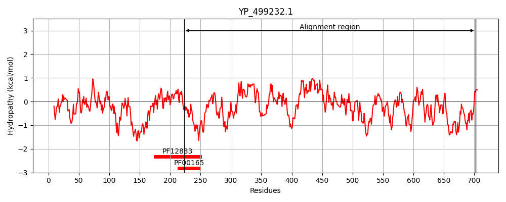
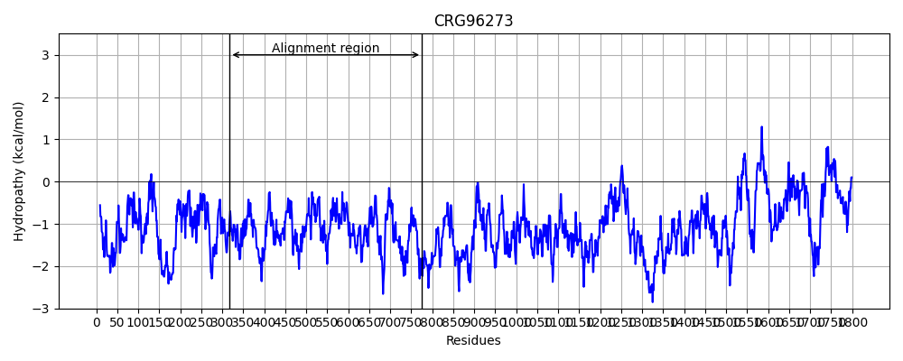
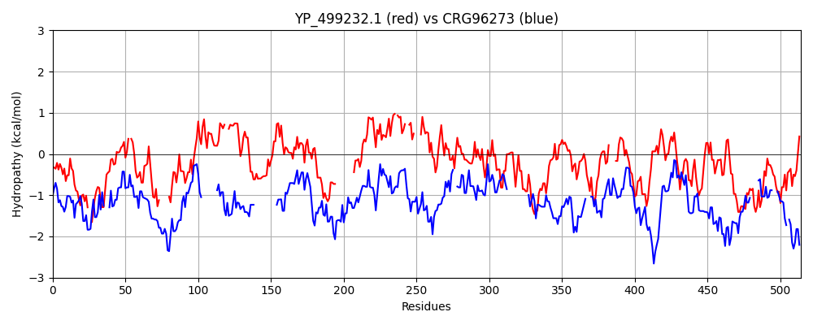

Hit Accession: CRG96273
Hit TCID: 1.C.105.2.14
Hit Description: gnl|BL_ORD_ID|2914 gnl|TC-DB|CRG96273|1.C.105.2.14 conserved Plasmodium protein, unknown function [Plasmodium gallinaceum]
Mach Len: 514
e:0.000306
Query TMS Count : 0
Hit TMS Count: 0
TMS-Overlap Score: 0.000000
Predicted Substrates:None
BLAST Alignment:
Score: 102 , Bit scores: 43 bits, E-value: 3.1e-04, Alignment length: 514, Percentage identity: 21
Query: 223 SEHLGFSSSSTYSKMFKSYMDITPN--EYRNLSKYNKCLMLKPEPLVGKMVQE-VKEIILNYIEHYKNHLTDVI------HIDEDKFETPKLFQTVIQINTYTEMKLVFLEGIFKTLLN--KNSQVVFFIMPSILKSKNTMSEEEKFTIIKTIIESDLKIAFNINNIETTYFVEEAFMSVFRQISPNELSNHNNY------------EVHFVFDLSLMEIRTIYRMILKLHNIMLN-VKLGLN--ITCL----FEKPSVFKSLVSQIKRLKFDSLIIDNANLSSPYLMGESDELLLKNILHFKNLKQVINELDIEQEKLIFLNVENHKLLNNKERDLSNSAPLIYKTLSALYHNFDGFGLNIFDNHQAFNAMHLYDKNGFKTT----LGLILEKFIEYVSKPKYENSYYSIFDIENYYCLVIYDWRVIESETIMSNFEDSQVYINFKNNVLNDKYLIVIETLDENSGNINHLISKELRDKYEWNPSLLSKIDNYLKPAIEIKEHNFSDNSLNIN 702
SEH + ++ K+Y++ N E +N SK N ++K + K+ ++++I N I + N++ + + ++ E+ +E L + I+ + + TL N K S + I SI+K+KN E + K I+N Y E ++ +S E + ++N +V+F + + + + K ++ N K LN I CL +K +K V Q+ + N + E +L N F ++++ INE D L D S+S+ YK L +N + F L I+ + HL + + TT + EK +S + +D +Y + V+ ++ N +++ Y + + LN K + E LD+N N+ I+K L+ SL + Y+ E K +N SD + N N
Sbjct: 318 SEHSAIQKRAGINEFNKNYVNNNFNFHELKNESKNN---IVKNYIKINKVENSNIEQLINNNISNSNNYVDNKVKRYAQKNLKENNYENKLLPKNAFDISYFK----------YSTLHNSRKTSDINNNIHNSIIKTKN---------------EENTKFMNEISNTSIIYPSENKCSNISENVSKKEHNIYSNSKYANTYDENINDKVNFTLEEKAYMNSSYIKNLEKFKELLFNATKDNLNEYIKCLQNINNKKLKNYKYYVKQVNNYNISQYL--NTTFKASVPQKNIKESMLNNSDTFSSIQKCINESD--------------DLSTTTYSDNSSSSNFEYKDLINSNNNNNNFSLKIYKGKK---KSHLKNTSTLSTTPTNEINSCSEKVKNKISFSLLNKNKEKKYDKSSYNNVRPKMSTVVINKNDFLNIKENHSYNLKRLDNLNVKKIKKDEDLDKNDSFKNNYINKTLKKN-----SLYETLGKYI---TEEKLYN-SDYAKNYN 775 | Protein Hydropathy Plots: |
|---|
|  |  |
Pairwise Alignment-Hydropathy Plot:
|
|---|
|  |